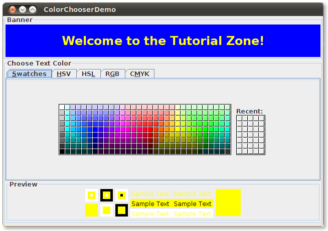
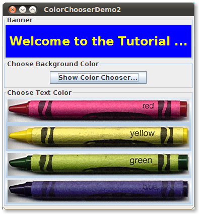

Lección: Usando Componentes Swing
Sección: Cómo Usar Varios Componentes
Cómo Usar Selectores de Color
Use la clase
JColorChooser para habilitar a los usuarios el seleccionar desde una paleta de colores. Un
selector de color es un componente que puede colocar en cualquier parte dentro de la IGU de su programa. La
IPA de JColorChooser también hace fácil mostrar un diálogo (modal o
no) que contiene un selector de color.
Aquí tiene una imagen de una aplicación que utiliza un selector de color para establecer el color de texto en una pancarta:

Pruebe esto:
-
Pulse el botón Lanzar para ejecutar la Demo ColorChooser usando
Java™ Web Start (
descargue el KDJ).
Alternativamente, para compilar y ejecutar el ejemplo por usted mismo, consulte el
índice de ejemplos.

El código fuente para el programa está en
ColorChooserDemo.java.
El selector de color consiste de todo lo que están dentro de la caja etiquetada Choose Text Color. Esto es como se ve un selector de color estándar en la Apariencia Java. Contiene dos partes, un panel tabulado y un panel de vista previa. Las tres pestañas en el panel tabulado selecciona paneles de selección. El panel de vista previa bajo el panel tabulado visualiza el color seleccionado actualmente.
Aquí está el código del ejemplo que crea una instancia de JColorChooser y lo añade a un contenedor:
public class ColorChooserDemo extends JPanel ... {
public ColorChooserDemo() {
super(new BorderLayout());
banner = new JLabel("Welcome to the Tutorial Zone!",
JLabel.CENTER);
banner.setForeground(Color.yellow);
. . .
tcc = new JColorChooser(banner.getForeground());
. . .
add(tcc, BorderLayout.PAGE_END);
}
El constructor de JColorChooser en el trozo de código previo toma un argumento Color,
el cual especifica el color seleccionado inicialmente en el seleccionador. Si no especifica el color inicial,
entonces el selector de color visualiza Color.white. Vea la documentación de la IPA de
Color
para una lista de constantes de color que puede usar.
Un selector de color usa una instancia de
ColorSelectionModel para contener y gestionar la selección actual. El modelo de selección
de color dispara un evento de cambio cada vez que el usuario cambia el color en el selector de color. El
programa de ejemplo registra un oyente de cambio con el modelo de selección de color de forma que pueda
actualizar la pancarta en lo alto de la ventana.
El siguiente código registra e implementa el oyente de cambio:
tcc.getSelectionModel().addChangeListener(this);
. . .
public void stateChanged(ChangeEvent e) {
Color newColor = tcc.getColor();
banner.setForeground(newColor);
}
Vea Cómo Escribir un Change Listener para información general sobre los oyentes de cambio y los eventos de cambio.
Un selector de color básico, como el usado en el programa de ejemplo, es suficiente para muchos programas. Sin
embargo, la IPA del selector de color le permite personalizar un selector de color proporcionando con un panel
de vista previa de su propio diseño, añadiendo sus propios paneles de selección a él, o eliminar paneles de
selección existentes del seleccionador de color. Adicionalmente, la clase JColorChooser proporciona
dos métoso que hacen fácil usar un selector de color dentro de un diálogo.
El resto de ésta sección describe estos tópicos:
- Otro Ejemplo: ColorChooserDemo2
- Mostrar un Selector de Color en un Diálogo
- Eliminar o Reemplazar el Panel de Vista Previa
- Crear un Panel Selector Personalizado
- La IPA del Selector de Color
- Ejemplos que Usan Selectores de Color
Otro Ejemplo: ColorChooserDemo2
Ahora volvamos nuestra atención a
ColorChooserDemo2, una versión modificada del programa demostración previo que usa más de la IPA de
JColorChooser.
Pruebe esto:
-
Pulse el botón Lanzar para ejecutar la Demo ColorChooser Demo usando
Java™ Web Start (
descargue el KDJ).
Alternativamente, para compilar y ejecutar el ejemplo por usted mismo, consulte el
índice de ejemplos.
Aquí tiene una foto de ColorChooserDemo2:

Este programa personaliza el selector de color del texto de la pancarta de estas maneras:
- Elimina el panel de vista previa
- Elimina todos los paneles de selección por defecto
- Añade un panel de selección personalizado
Eliminar o Reemplazar el Panel de Vista Previa cubre la primera personalización. Crear un Panel Selector Personalizado describe las dos últimas.
Este programa también añade un botón que muestra un selector de color en un diálogo, el cual puede usar para establecer el color de fondo de la pancarta.
Mostrar un Selector de Color en un Diálogo
La clase JColorChooser proporciona dos métodos de clase que hacen fácil usar un selector de color
en un diálogo. ColorChooserDemo2 usa uno de estos métodos, showDialog, para visualizar el selector
del color de fondo cuando el usuario pulsa el botón Show Color Chooser.... Aquí está la única
línea de código del ejemplo que muestra el selector del color de fondo en un diálogo:
Color newColor = JColorChooser.showDialog(
ColorChooserDemo2.this,
"Choose Background Color",
banner.getBackground());
El primer argumento es el padre del diálogo, el segundo es el título del diálogo, y el tercero es el color inicialmente seleccionado.
El diálogo desaparace bajo tres condiciones: el usuario elige un color y pulsa el botón OK, el
usuario cancela la operación con el botón Cancel, o el usuario descarta el diálogo con un
control del marco. Si el usuario selecciona un color, el método showDialog devuelve el color nuevo.
Si el usuario cancela la operación o descarta la ventana, el método devuelve null. Aquí está el
código del ejemplo que actualiza el color de fondo de la pancarta de acuerdo al valor devuelto por
showDialog:
if (newColor != null) {
banner.setBackground(newColor);
}
El diálogo creado por showDialog es modal. Si quiere un diálogo no-modal, puede usar el método
createDialog de JColorChooser para crear el diálogo. Este método también permite que
especifique oyentes de acción para los botones OK y Cancel en la ventana de
diálogo. Use el método show de JDialog para mostrar el diálogo creado por este
método. Para un ejemplo que usa este método, vea Usar Otros Editores en la
sección Cómo Usar Tablas.
Eliminar o Reemplazar el Panel de Vista Previa
Por defecto, el selector de color muestra un panel de vista previa. ColorChooserDemo2 elimina el panel de vista previa del selector de color del texto con esta línea de código:
tcc.setPreviewPanel(new JPanel());
Esto efectivamente elimina el panel de vista previa porque un JPanel plano no tiene tamaño ni vista
por defecto. Para restablecer el panel de vista previa por defecto, use null como argumento a
setPreviewPanel.
Parar proporcionar un panel de vista previa personalizado, también use setPreviewPanel. El
componente que pase al método debería heredar de JComponent, especificar un tamaño razonable, y
proporcionar una vista personalizada del color actual. Para ser notificado cuando el usuario cambia el color en
el selector de color, el panel de vista previa debe registrar un oyente de cambio en el modelo de selección de
color del selector de color como se describió previamente.
Crear un Panel Selector Personalizado
El selector de color por defecto proporciona cinco paneles de selección:
- Muestras ─ Para elegir un color de una colección de muestras.
- HSV ─ para elegir un color usando la representación de color Tono-Saturación-Valor. Antes del KDJ 7, esto fue llamado HSB, para Tono-Saturación-Brillo.
- HSL ─ para elegir un color con la representación de color Tono-Saturación-Ligereza. Esto es nuevo en el KDJ 7.
- RGB ─ para elegir un color usando el modelo de color Rojo-Verde-Azul.
- CMYK ─ para elegir un color usando el proceso de color o el modelo de cuatro colores. Esto es nuevo en el KDJ 7.
Puede extender el selector de color por defecto añadiendo paneles de selección de su propio diseño con
addChooserPanel, o puede limitarlos eliminando paneles de selección con
removeChooserPanel.
Si quiere eliminar del selector por defecto todos los paneles y añadir uno o más de los suyos, puede hacer esto
con una única llamada a setChooserPanels. ColorChooserDemo2 usa este método para reemplazar los
paneles del selector por defecto con una instancia de
CrayonPanel, un panel de selector personalizado. Aquí tiene la
llamada a
setChooserPanels de ese ejemplo:
//Sobreescribe los paneles de selección con los nuestros.
AbstractColorChooserPanel panels[] = { new CrayonPanel() };
tcc.setChooserPanels(panels);
El código es sencillo: crea un vector conteniendo a CrayonPanel. A continuación el código llama
a setChooserPanels para establecer los contenidos del vector como los paneles de selección del
selector de color.
CrayonPanel es una subclase de
AbstractColorChooserPanel y sobreescribe los cinco métodos abstractors definidos en la
superclase:
-
void buildChooser() - Crea la IGU que incluye el panel selector. El ejemplo crea cuatro botones conmutadores - uno para cada lápiz - y los agrega al panel selector.
-
void updateChooser() -
Este método se llama cada vez que se muestre el panel selector. La implementación de este método selecciona
el botón conmutador que representa el color seleccionado actualmente.
public void updateChooser() { Color color = getColorFromModel(); if (Color.red.equals(color)) { redCrayon.setSelected(true); } else if (Color.yellow.equals(color)) { yellowCrayon.setSelected(true); } else if (Color.green.equals(color)) { greenCrayon.setSelected(true); } else if (Color.blue.equals(color)) { blueCrayon.setSelected(true); } } -
String getDisplayName() -
Devuelve el nombre de visualización del panel selector. El nombre es usado en la pestaña del panel selector.
Aquí está el ejemplo del método
getDisplayName:public String getDisplayName() { return "Crayons"; } -
Icon getSmallDisplayIcon() -
Devuelve un icono pequeño que representa a este panel selector. Esto no se utiliza actualmente. Versiones
futuras del selector de color podrían usar este icono o el grande para representar este panel selector en el
monitor. La implementación del ejemplo de este método devuelve
null. -
Icon getLargeDisplayIcon() -
Devuelve un icono grande que representa a este panel selector. Esto no se utiliza actualmente. Versiones
futuras del selector de color podrían usar este icono o el pequeño para representar este panel selector en
el monitor. La implementación del ejemplo de este método devuelve
null.
La IPA del Selector de Color
Las tablas siguientes listan los constructores y métodos de JColorChooser usados comunmente. Otros
métodos que podría llamar están listados en las tablas de la IPA en
La Clase JComponent . La IPA para usar selectores de color se clasifica en estas
categorías:
- Crear y Visualizar el Selector de Color
- Personalizar la IGU del Selector de Color
- Establecer u Obtener el Color Actual
| Método o Constructor | Propósito |
|---|---|
|
JColorChooser()
JColorChooser(Color) JColorChooser(ColorSelectionModel) |
Crea un selector de color. El constructor por defecto crea un selector de color con un color inicial
Color.white. Use el segundo constructor para especificar un color inicial diferente. El
argumento ColorSelectionModel, cuando está presente, proporciona al selector de color un
modelo de selección de color.
|
| Color showDialog(Component, String, Color) |
Crea y muestra un selector de color en un diálogo modal. El argumento Component es el padre
del diálogo, el argumento String especifica el título del diálogo, y el argumento
Color especifica el color inicial del seleccionador.
|
|
JDialog createDialog(Component, String,
boolean, JColorChooser, ActionListener, ActionListener) |
Crea un diálogo para el selector de color especificado. Como con showDialog, el argumento
Component es el padre del diálogo y el argumento String especifica el título
del diálogo. Los otros argumentos son como siguen: el boolean especifica si el diálogo es
modal, el JColorChooser es el selector de color a mostrar en el diálogo, el primer
ActionListener es para el botón Aceptar, y el segundo es para el botón
Cancelar.
|
| Método | Propósito |
|---|---|
|
void setPreviewPanel(JComponent)
JComponent getPreviewPanel() |
Establece u obtiene el componente usado para previsualizar la selección de color. Para eliminar el panel
de previsualización, use new JPanel() como un argumento. Para especificar la versión por
defecto del panel de previsualización, use null.
|
|
void setChooserPanels(AbstractColorChooserPanel[])
AbstractColorChooserPanel[] getChooserPanels() |
Establece u obtiene los paneles de selección en el selector de color. |
|
void addChooserPanel(AbstractColorChooserPanel)
AbstractColorChooserPanel removeChooserPanel(AbstractColorChooserPanel) |
Añade un panel selector al selector de color o elimina un panel de selección de él. |
|
void setDragEnabled(boolean)
boolean getDragEnabled() |
Establece u obtiene la propiedad dragEnabled, la cual debe ser verdad para habilitar la
gestión del arrastre en este componente. El valor por defecto es false. Vea
Arrastrar y Soltar y Transferencia de Datos
para más detalles.
|
| Método | Propósito |
|---|---|
|
void setColor(Color)
void setColor(int, int, int) void setColor(int) Color getColor() |
Establece u obtiene el color seleccionado actualmente. La tercera versión entera del método
setColor interpreta los tres enteros juntos, como un color RGB. La versión de un único
entero del método setColor divide el entero en cuatro bytes de 8 bits e interpreta el
entero como un color RGB como sigue:
|
|
void setSelectionModel(ColorSelectionModel)
ColorSelectionModel getSelectionModel() |
Establece u obtiene el modelo de selección para el selector de color. Este objeto contiene la selección actual y dispara los eventos de cambio a los oyentes registrados siempre que la selección cambie. |
Ejemplos que Usan Selectores de Color
Esta tabla muestra los ejemplos que usan JColorChooser y donde esos ejemplos están descritos.
| Ejemplo | Donde está Escrito | Notas |
|---|---|---|
| ColorChooserDemo | Esta sección | Usa un selector de color estándar. |
| ColorChooserDemo2 | Esta sección |
Usa un selector de color personalizado y un selector de color estándar en un diálogo creado con
showDialog.
|
| TableDialogEditDemo | Cómo Usar Tablas |
Muestra cómo usar un selector de color como un editor de celdas personalizado en una tabla. El selector
de color usado por este ejemplo es creado con createDialog.
|
| BasicDnD | Introducción al Arrastrar y Soltar (Dnd) | Usa un selector de color que no está en un diálogo; demuestra las características arrastrar-y-soltar por defecto de los componentes de Swing, incluyendo los selectores de color. |